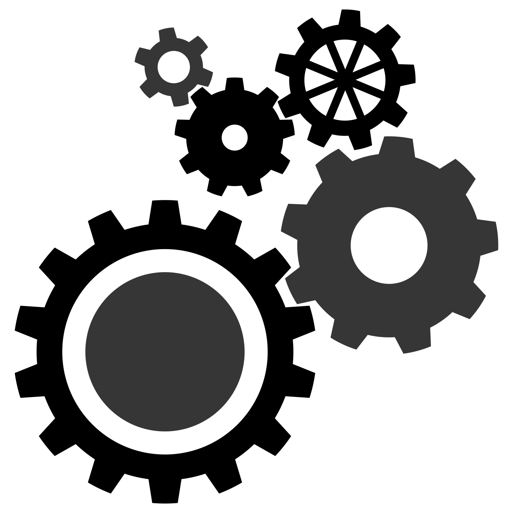

Realisierung der App :
Aktuell ist die App ein Prototyp. Der nächste Schritt wäre natürlich die App ins reale Leben zu
führen und sie zu programmieren.
Technische und inhaltliche Erweiterungen :
Hier würden wir die Anzahl der Kontakte zu verschiedenen Therapeuten, die in unserer App angeboten
werden, erhöhen. Ebenso würden wir auch Kontakte zu Therapeuten für verschiedene Regionen anbieten.
Eine weitere Sache, die wir realisieren würden, wäre eine Google-Maps artige Karte. Diese Karte soll
unseren Anwendern die nächsten Therapeuten in deiner Nähe anzeigen.
Da leider nicht jeder Therapeut eine E-Mail-Adresse angegeben hat, haben wir beschlossen, kein
Kontaktformular anzubieten. Dieses Kontaktformular sollte ursprünglich für Leute angeboten werden,
die Angst davor haben zu telefonieren. Wenn es sich jedoch rausstellen sollte, dass doch eine hohe
Anzahl von Therapeuten eine E-Mail-Adresse angeben würden, dann würden wir uns nochmals überlegen
solch ein Formular anzubieten.
Ein weitere Sache, die wir angehen würden ist die Optimierung der Challenges und Aufgaben. Hier
würden wir weitere Challenges und Aufgaben entwickeln und anbieten.
Eine zusätzliche Erweiterung wäre, nicht nur auf das Selbstbewusstsein Rücksicht zu nehmen, sondern
auch unseren Nutzern zu helfen mit Trauer umzugehen. Dafür würden wir eine Anleitung entwickeln, die
die vier Phasen der Trauer berücksichtigt.
